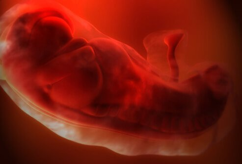
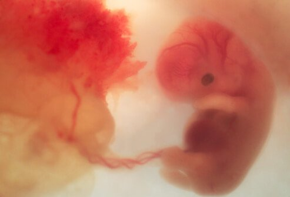
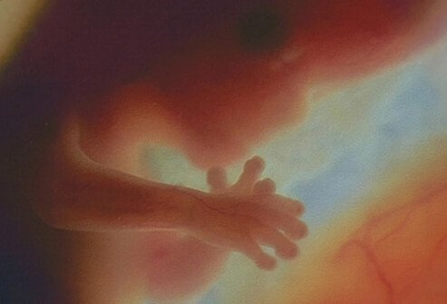

First Trimester: Physical and Emotional Changes a Woman May Experience
Hormonal changes will affect almost every organ in the body. Some signs of early pregnancy include:
- Extreme fatigue
- Tender, swollen breasts. Nipples may protrude.
- Nausea with or without throwing up (morning sickness)
- Cravings or aversion to certain foods
- Mood swings
- Constipation
- Frequent urination
- Headache
- Heartburn
- Weight gain or loss
First Trimester: Changes in a Woman's Daily Routine
Some of the changes you experience in your first trimester may cause you to revise your daily routine. You may need to go to bed earlier or eat more frequent or smaller meals. Some women experience a lot of discomfort, and others may not feel any at all. Each pregnancy is different and even if you've been pregnant before you may feel completely different with each subsequent pregnancy.
First Trimester: The Baby at 4 Weeks

At 4 weeks, your baby is developing:
- The nervous system (brain and spinal cord) has begun to form.
- The heart begins to form.
- Arm and leg buds begin to develop.
- Your baby is now an embryo and 1⁄25 of an inch long.
First Trimester: The Baby at 8 Weeks

At 8 weeks, the embryo begins to develop into a fetus:
- All major organs have begun to form.
- The baby's heart begins to beat.
- The arms and legs grow longer.
- Fingers and toes have begun to form.
- Sex organs begin to form.
- The face begins to develop features.
- The umbilical cord is clearly visible.
- At the end of 8 weeks, your baby is a fetus, and is nearly 1 inch long, weighing less than ⅛ of an ounce.
First Trimester: The Baby at 12 Weeks

The end of the first trimester is at about week 12, at this point in your baby's development:
- The nerves and muscles begin to work together. Your baby can make a fist.
- The external sex organs show if your baby is a boy or girl.
- Eyelids close to protect the developing eyes. They will not open again until week 28.
- Head growth has slowed, and your baby is about 3 inches long, and weighs almost an ounce.